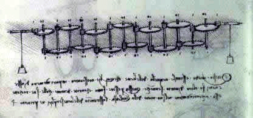
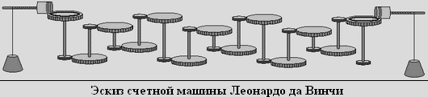

|
Long time ago there lived the inventor "Leonardo Da Vinci". And one day he created a calculating machine (calculator).


It consisted from 13 columns with ten-tooth rings. The basis of the calculating machine was made up of rods with two cogwheels, a large one on one side and a small one on the other. As you can see from the sketch by Leonardo da Vinci, these rods were positioned so that the small wheel on the rod engages with the large wheel on the adjacent rod. Thus, ten revolutions of the first rod led to one complete revolution of the second rod, and ten revolutions of the second - to one complete revolution of the third rod, and so on. The entire system was driven by a set of weights.
It is believed that during Leonardo's lifetime, the machine was not created. However, in 1968, Dr. Roberto Guatelli recreated the calculator using drawings. Small improvements have been made over Leonardo's original sketch to give the viewer a clearer picture of how each of these 13 wheels can move independently and still maintain a ten to one ratio. However, over the course of a year, objections arose about the accuracy of the counting machine, and the doctor decided to remove the controversial model from the collection.
| |